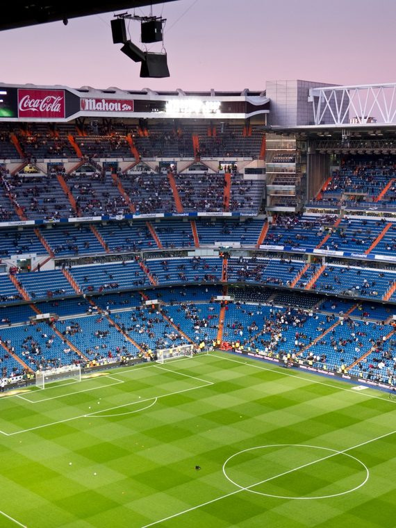
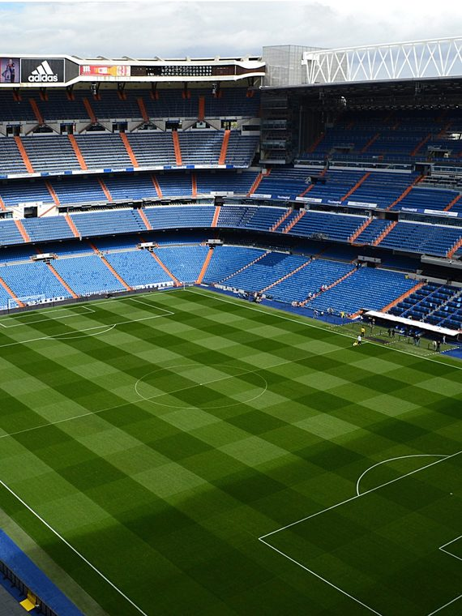
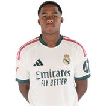
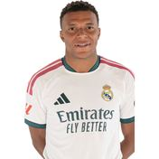
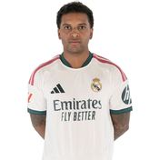
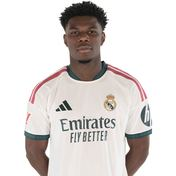
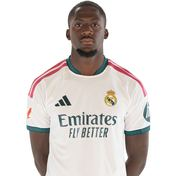
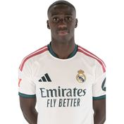
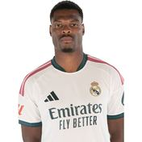
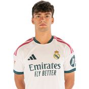

MA
';" />El más laureado del mundo
Real Madrid CF
1902
Año de fundación del club
Los Blancos / Los Merengues
Una breve historia
Fundado en 1902, el Real Madrid es el club con más Copas de Europa/Champions League de la historia. Su rivalidad con el FC Barcelona, El Clásico, es el partido de clubes más seguido del planeta. Ha sido durante décadas la referencia mundial del fútbol de clubes.
Fieles a los colores
de Madrid

📷Foto pendiente
(real-madrid-1.jpg)';" />

📷Foto pendiente
(real-madrid-2.jpg)';" />
Títulos y logros
Vitrina de títulos
0
LaLiga
0
Copa del Rey
0
Champions League
0
Supercopa de España
La rivalidad
El duelo que enciende a la afición
Real Madrid CF
VS
FC Barcelona — El Clásico
Temporada 2026 / 27
Plantilla del primer equipo
Datos de ejemplo — reemplázalos con la plantilla real en data/teams.js.
1
🧑';" />
Courtois
Portero
2
🧑';" />
Asencio
Defensa
3
🧑';" />
E. Militão
Defensa
4
🧑';" />
Huijsen
Defensa
5
🧑';" />
Bellingham
Centrocampista
6
🧑';" />
Camavinga
Centrocampista
7
🧑';" />
Vini Jr.
Delantero
8
🧑';" />
Valverde
Centrocampista
9

🧑';" /> Endrick Delantero
10

🧑';" /> Mbappé Delantero
11

🧑';" /> Rodrygo Delantero
12
🧑';" />
Trent
Defensa
13
🧑';" />
Lunin
Portero
14

🧑';" /> Tchouameni Centrocampista
15
🧑';" />
Arda Güler
Centrocampista
16

🧑';" /> Konaté Defensa
17
🧑';" />
Cucurella
Defensa
18
🧑';" />
Á. Carreras
Defensa
19
🧑';" />
C. Espí
Delantero
20
🧑';" />
Bernardo
Centrocampista
21
🧑';" />
Brahim
Centrocampista
22
🧑';" />
Rüdiger
Defensa
23

🧑';" /> F. Mendy Defensa
24

🧑';" /> Dumfries Defensa
25
🧑';" />
Yan Diomande
Delantero
26
🧑';" />
Mestre
Portero
27
🧑';" />
Thiago
Centrocampista
29
🧑';" />
Cestero
Centrocampista
31
🧑';" />
Javi Navarro
Portero
33

🧑';" /> Mario Rivas Defensa
36
🧑';" />
Alexis Ciria
Delantero
38
🧑';" />
Sergio
Centrocampista